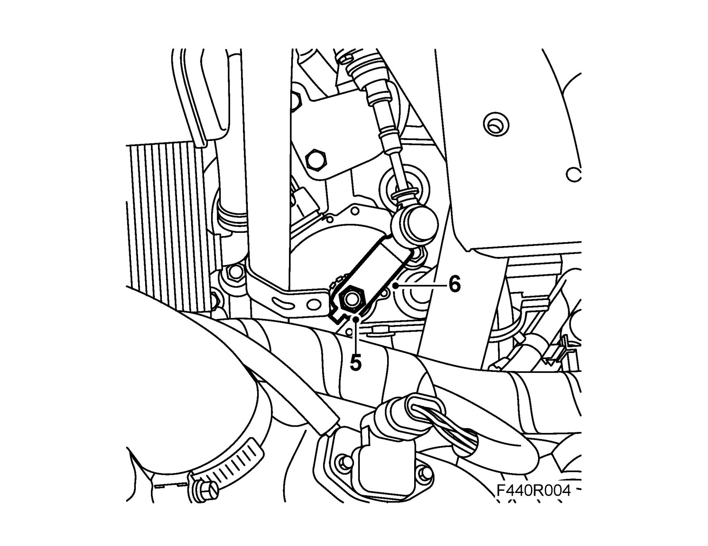
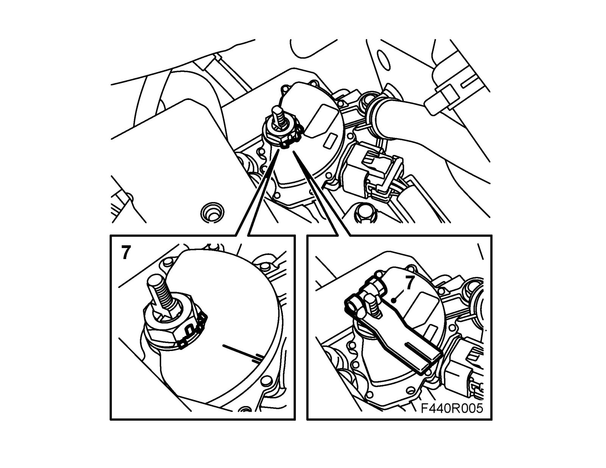
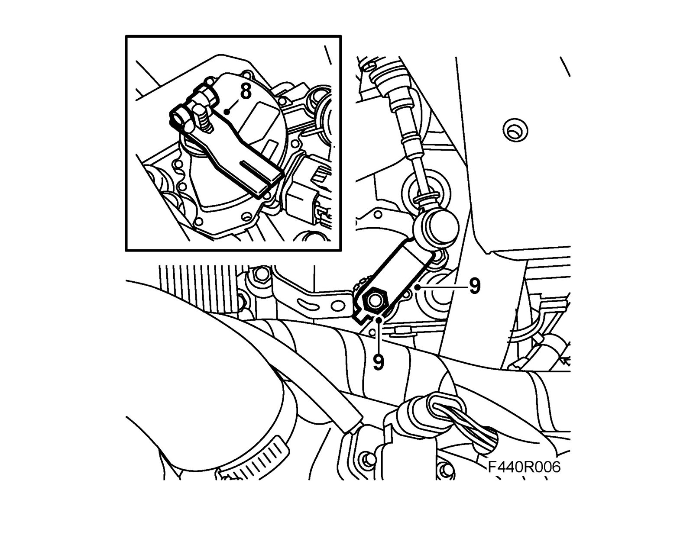
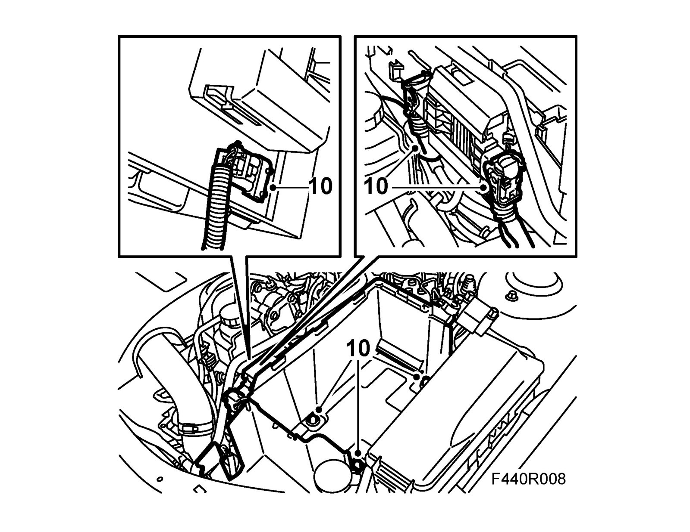
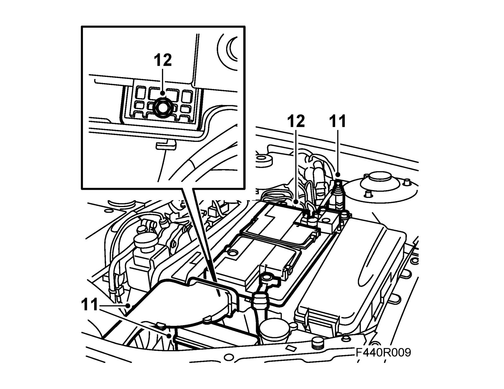
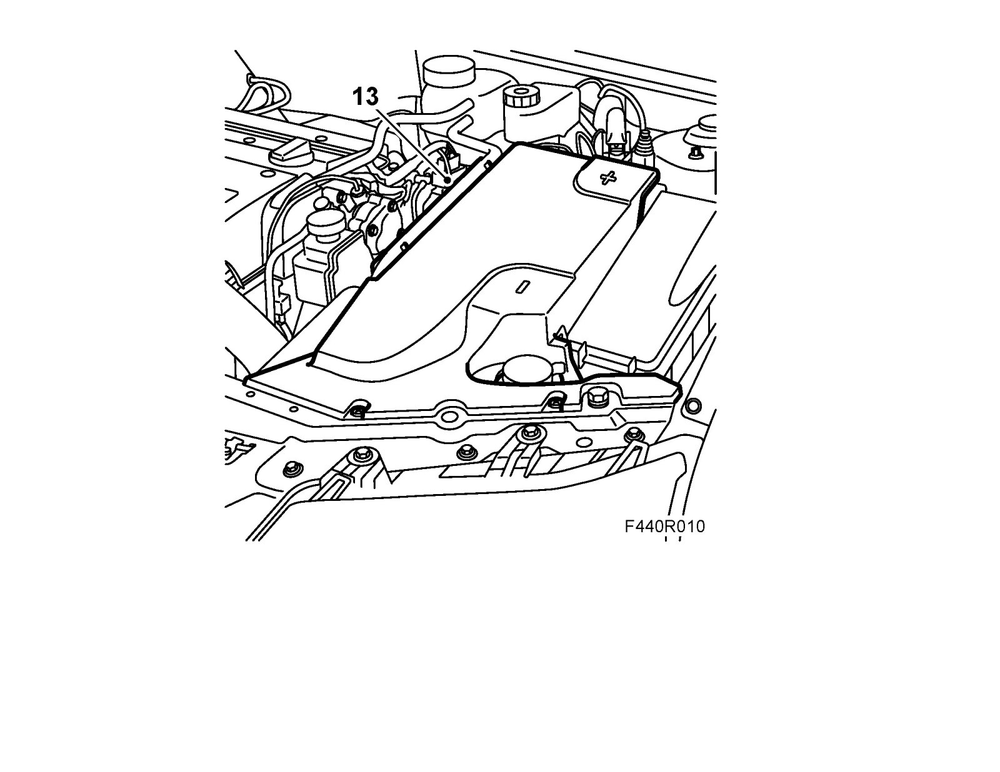

Transmission Position Sensor/Switch: Adjustments
Adjusting the gear selector position sensorAdjustment
1. Place covers over the wing to keep the paintwork clean and protect it from damage.
2. Remove the battery cover.

3. Remove the battery, coolant pipe, main fuse box and bonnet switch.

4. Unplug the control module connector. Unplug the connectors under the control module. Remove the battery tray.

5. Put the gear lever in position N and undo the nut on the lever.

6. Remove the lever.
7. Engage neutral, fit 87 92 467 Adjustment tool, gear selector position sensor. Undo the bolts for the gear selector position sensor and adjust it so that the line is visible in the middle of the adjustment tool groove. Tighten the bolts.
Tightening torque 25 Nm (18 lbf ft)

8. Remove the adjustment tool.

9. Fit the gear selector lever.
Tightening torque 20 Nm (15 lbf ft)
10. Plug in the connectors under the control module. Fit the battery tray and plug in the control module connector.

11. Fit the main fuse box, bonnet switch and coolant pipe.

12. Fit the battery and connect the battery cables.
13. Fit the battery cover.

14. Remove the wing covers.
15. Set the car clock.